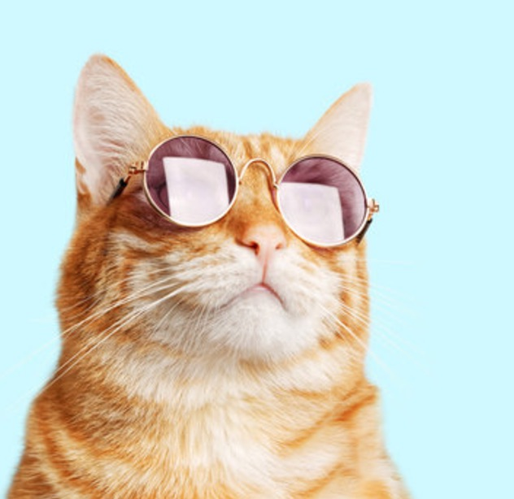

Favorite Animal
Cat
My favorite animal is a cat because they are cute and fluffy. I like when they have zoomies and are playful. Some interesting facts about cats are:
- Cats can't taste sweetness. They have fewer taste buds than humans
- Cats can run up to 30 miles per hour
- Cats Purring frequency is the same rate at which bones and muscles repair

Check out more about cats from purina
Cat facts by purina
Lisbeth Perez Dec 3, 2024